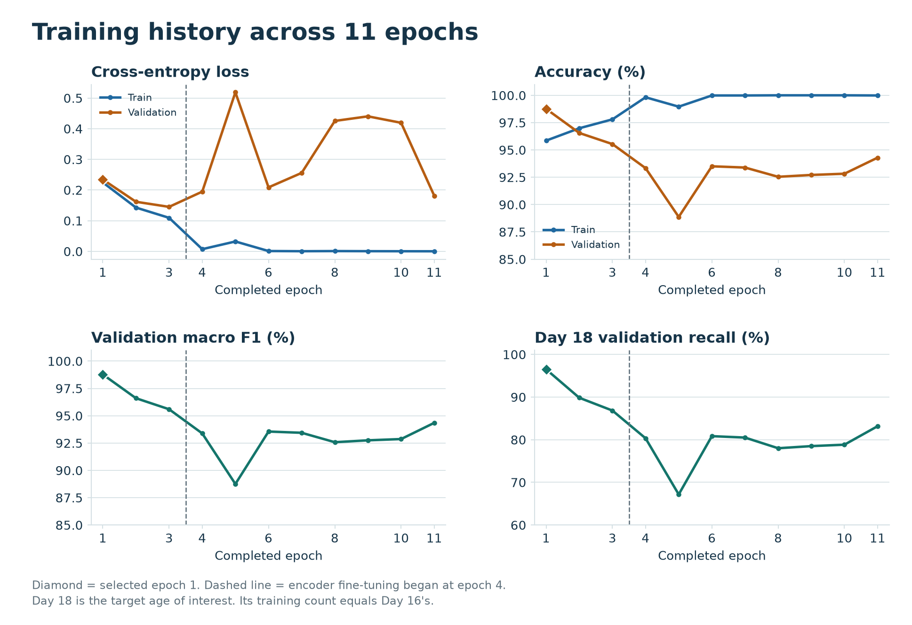
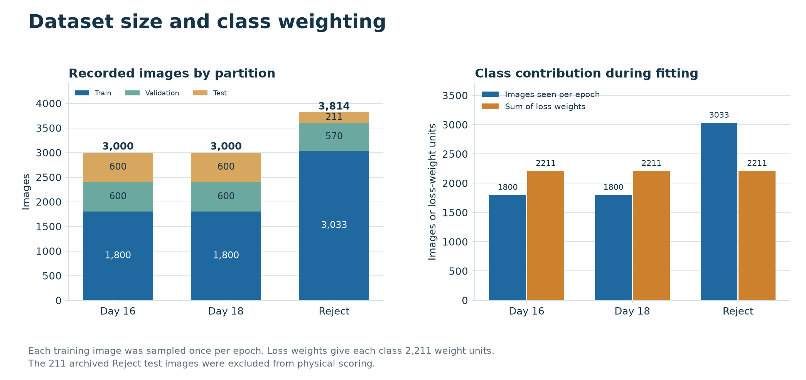
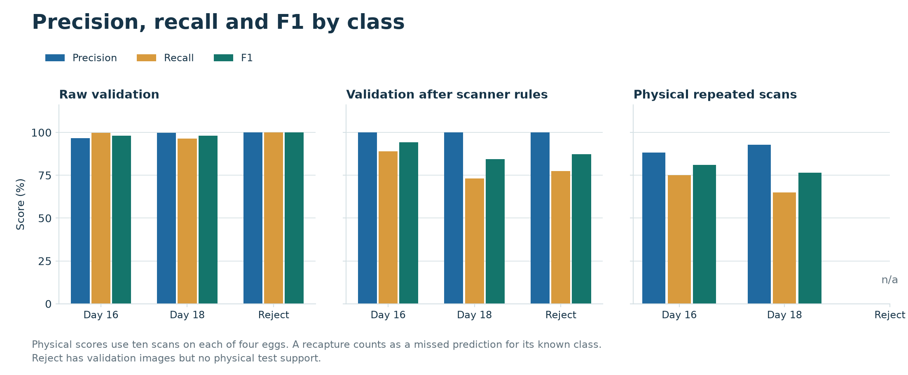
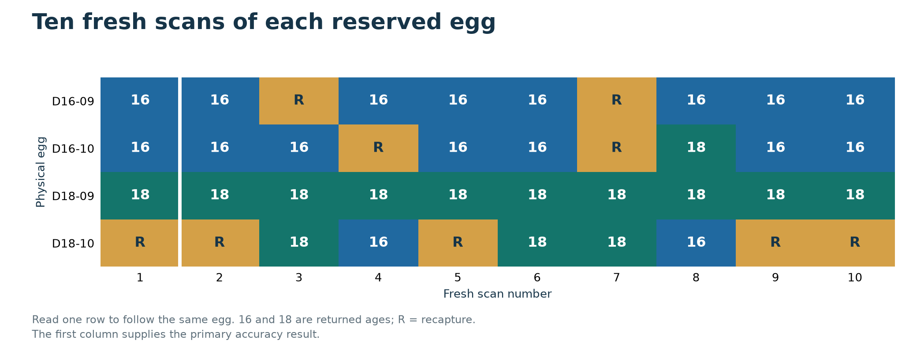
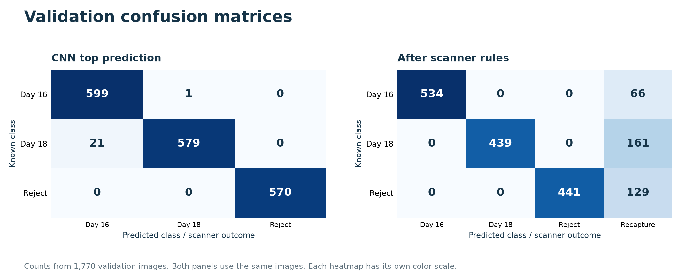
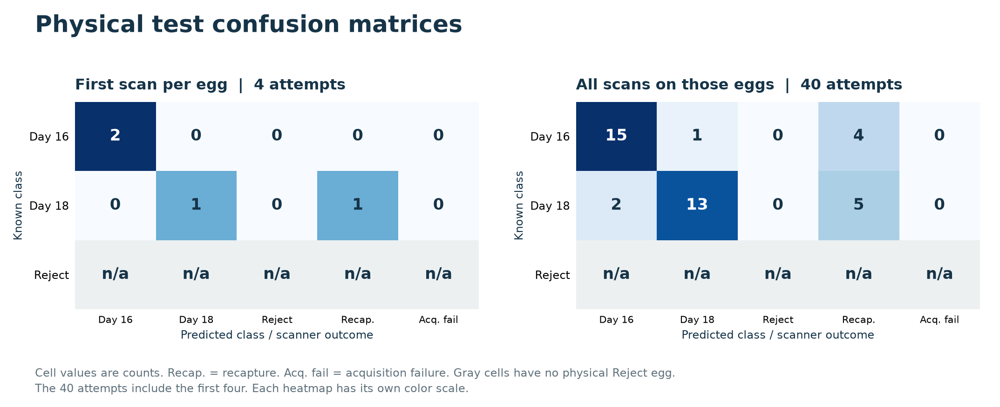
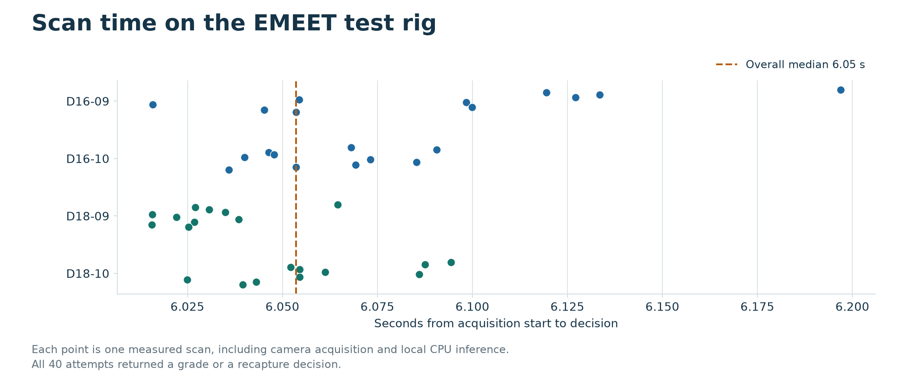

EggGrade panel guide
Three of four reserved eggs were correct on the first scan. Across all 40 fresh scans, 28 were correct, three returned the wrong age and nine requested another view.
1. How did you train the model?
We collected 300 real EMEET images from each of 20 age-confirmed duck eggs. Each egg turned in two placements with 150 frames per placement. We reused the source-labeled Reject collection and trained a three-class classifier on 6,633 images. We resized inputs to 224 x 224 pixels, normalized them, and initialized MobileNetV2 from ImageNet weights. AdamW optimized weighted cross-entropy with batch size 32 and seed 42. Mild geometric and brightness changes applied only during training. Each egg or source family received equal weight within its class, and each class received equal total weight.

Diamond = selected epoch 1. Dashed line = encoder fine-tuning began at epoch 4.
Day 18 is the target age of interest. Its training count equals Day 16's. Download PNG2. Why did you choose this split?
For each age, six eggs trained the weights, two selected the checkpoint and scanner thresholds, and two were reserved for a physical test. That gave a 60/20/20 split by egg and kept every angle of one egg in one partition. We used the available ten eggs per age to preserve two separate eggs for each evaluation step. Reject retained its historical source-family split. The four reserved age eggs stayed outside fitting and calibration.

Each training image was sampled once per epoch. Loss weights give each class 2,211 weight units.
The 211 archived Reject test images were excluded from physical scoring. Download PNG3. Where can we see precision, recall and F1?
The metric table reports all three by class. The raw validation model got 1,748 of 1,770 images correct (98.76%); its macro F1 was 98.78%. The locked scanner returned 1,414 correct grades, zero wrong grades and 356 recaptures on those same images (79.89% correct across all views). In the 40 fresh physical scans, Day 16 F1 was 81.08% and Day 18 F1 was 76.47%. Physical Reject metrics are unavailable because there were zero confirmed Reject test eggs.

Physical scores use ten scans on each of four eggs. A recapture counts as a missed prediction for its known class.
Reject has validation images but no physical test support. Download PNG4. How did you compute the scores?
Accuracy = correct / all attempts. Precision = TP / (TP + FP). Recall = TP / (TP + FN). F1 = 2TP / (2TP + FP + FN). For Day 18 across all 40 physical attempts, TP = 13, FP = 1 and FN = 7. Precision = 13/14 = 92.86%, recall = 13/20 = 65.00% and F1 = 26/34 = 76.47%. The seven misses were two Day 16 grades and five recaptures. Macro F1 averages the supported class F1 values; weighted F1 weights classes by support.
Coverage = 31/40 = 77.5%. Accuracy among classified scans = 28/31 = 90.32%. Report it alongside accuracy over all 40 attempts.
5. Did repeated scans of the same egg agree?
We reopened the EMEET for ten fresh scans per reserved egg. Each scan used three new camera views after warmup. D18-09 returned Day 18 on all ten attempts. D18-10 returned Day 18 three times, Day 16 twice and recapture five times. D16-09 was correct eight times and D16-10 seven times. Only one of four eggs returned the same class every time. Numerical scores varied on all four eggs, so none met the stricter identical-output criterion.

Read one row to follow the same egg. 16 and 18 are returned ages; R = recapture.
The first column supplies the primary accuracy result. Download PNG6. Why did Day 16 and Day 18 get confused?
The ground-truth difference is 48 hours in the operator's reported incubation record. The scanner sees light transmitted through the shell. In this study some eggs of both ages showed a dark center and bright rim. On D18-10, Day 16 was the top prediction in 21 of 30 fresh views. A second issue was the scanner's quality rule: on D16-09 all 30 top predictions were correct, yet two scans requested recapture because too few views passed its sharpness check. The measurements establish both types of error. They cannot identify the anatomical cause of an individual error.

Counts from 1,770 validation images. Both panels use the same images. Each heatmap has its own color scale. Download PNGA published duck staging study placed the same HH39 developmental stage at about day 16 in Pekin ducks and day 18.5 in Mulard ducks (Trela et al., Table 5). This illustrates why elapsed age and visible development can differ. Our EMEET trial did not establish a breed-specific marker, confirm anatomy through candling, or measure viability. Duck staging study.
7. Which epoch did you stop at, and why?
We completed 11 epochs and restored the checkpoint from epoch 1, which had the highest validation macro F1 (0.98777). Epochs 1-3 trained the new classifier head. At epoch 4 we unfroze the last five encoder blocks and reset the patience counter. Epochs 4-11 did not improve the best validation macro F1 by more than 0.001, so eight stale fine-tuning epochs triggered stopping. The cap was 50. The deployed-for-test checkpoint therefore used the trained head with the ImageNet encoder.
8. Was there data leakage?
The audit found no known cross-partition physical-egg, recorded source-family or exact-image overlap. All 6,000 age frames had distinct decoded pixel hashes. We locked the candidate and decision rules before recording the reserved eggs, then scored 120 fresh physical views. However, egg and batch identities in the archived Reject source are incomplete, some eggs may have appeared in earlier project experiments, and age images and public Reject images came from different camera domains. Random frame-level splitting would have overstated independence. No group or hash check eliminates all possible bias.
9. Which CNN did you use?
We used MobileNetV2 with a three-class output: Day 16, Day 18 and Reject. Its lightweight convolution blocks use depthwise convolutions, inverted residual connections and linear bottlenecks. The EMEET supplied images, the ESP32 controlled the rotating holder, the RTX 3080 trained the model, and the host CPU ran the exported ONNX model during physical testing. The Vercel scanner uses the same locked model and thresholds for research estimates.
MobileNetV2 architecture paper
10. What is your field-testing accuracy?
Our controlled physical result was 3/4 correct (75%) on the first scan of each reserved egg. D18-10's first scan requested recapture. Across ten scans of each egg, 28/40 were correct (70%), three were wrong and nine requested recapture. All 40 camera acquisitions succeeded. Of the 31 scans that returned a grade, 28 were correct (90.32%). Median time was 6.05 seconds per scan. Broad production-field accuracy remains unestablished: only four age eggs were tested, and physical Reject support was zero.

Cell values are counts. Recap. = recapture. Acq. fail = acquisition failure. Gray cells have no physical Reject egg.
The 40 attempts include the first four. Each heatmap has its own color scale. Download PNG
Each point is one measured scan, including camera acquisition and local CPU inference.
All 40 attempts returned a grade or a recapture decision. Download PNGAlignment with the study objectives
01 Integrate camera, microcontroller and CNN
Demonstrated on the test rig.The EMEET supplied images. The ESP32 drove holder rotation and reported motor steps. MobileNetV2 ran on the host CPU for the 40 physical scan decisions.
Describe these roles explicitly. On-device CNN inference would require a separate microcontroller deployment and benchmark.
02 Collect labeled images and validate the classifier
Dataset and validation complete. Stability remains limited.The audited corpus contains 3,000 Day 16 images, 3,000 Day 18 images and 3,814 archived Reject images. Validation metrics and four physical egg results are available. The retained Reject annotations do not independently establish dead embryo or spoilage.
Define the stakeholder's acceptable accuracy and stability thresholds before the next independent trial. Collect confirmed physical Reject examples to measure that class.
03 Grade eggs using a decision rule and rotating holder
Rotation and software decisions demonstrated; bin sorting unverified.Each egg was recorded over 12 estimated holder sectors in two placements. Margin, image-quality and similarity checks assess individual views. At least two accepted views must agree to return a grade. Operators still placed, repositioned and removed the eggs.
For a physical sorting trial, log the commanded grade, actual destination, recaptures, manual interventions and routing time per egg. Compute correct deliveries divided by all attempted sorts.
04 Evaluate ISO/IEC 25010 qualities and real operation
Controlled measurements complete; stakeholder and production evaluation pending.The rig recorded 28/40 correct repeat scans, median response time 6.05 s and 40/40 completed acquisitions. Some dataset collection attempts had holder-status timeouts and needed a retry. A blank vendor, farmer and technical-evaluator instrument is available.
Record the ISO/IEC 25010 edition used. Administer the instrument to all three groups, summarize responses and missing values separately, and repeat timed accuracy and dependability tests in an actual production setting.
Blank stakeholder questionnaire · ISO product quality model